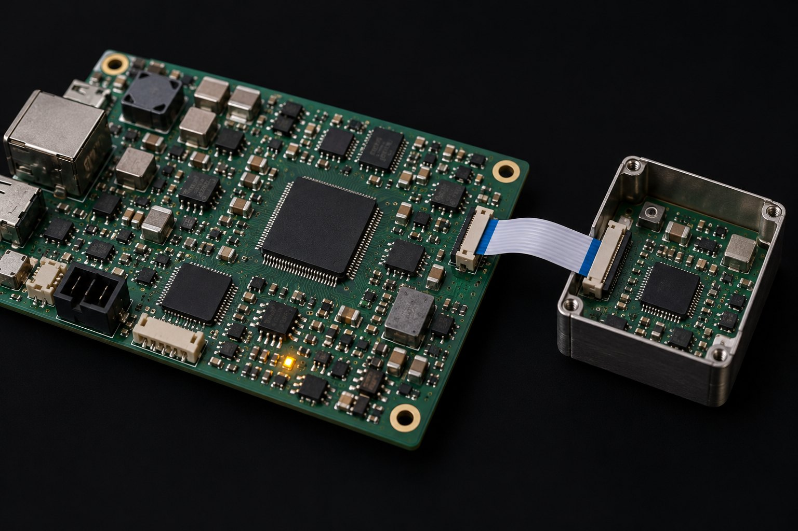
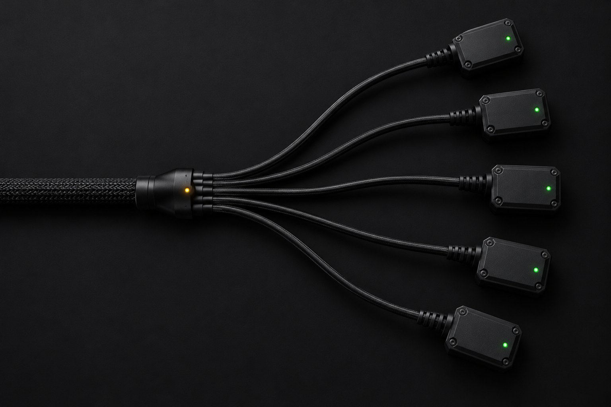
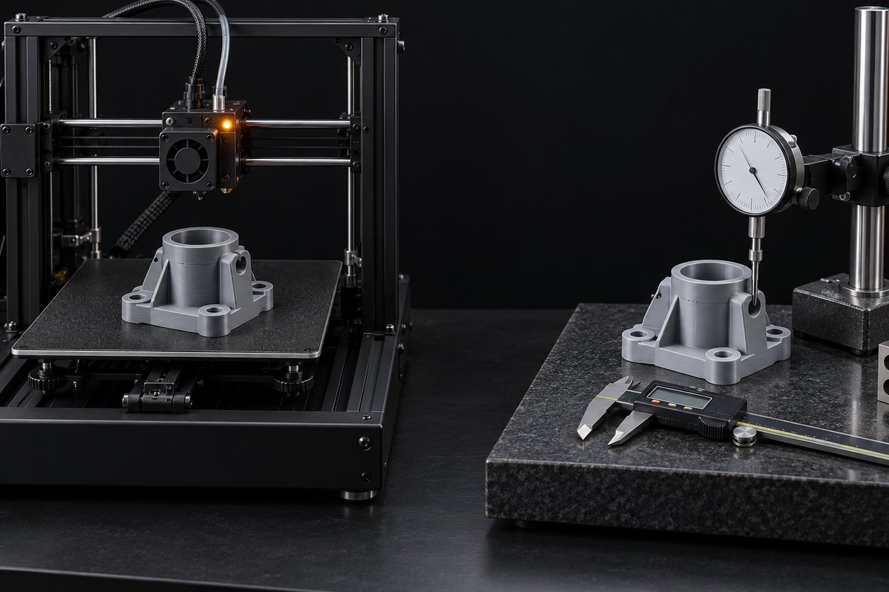
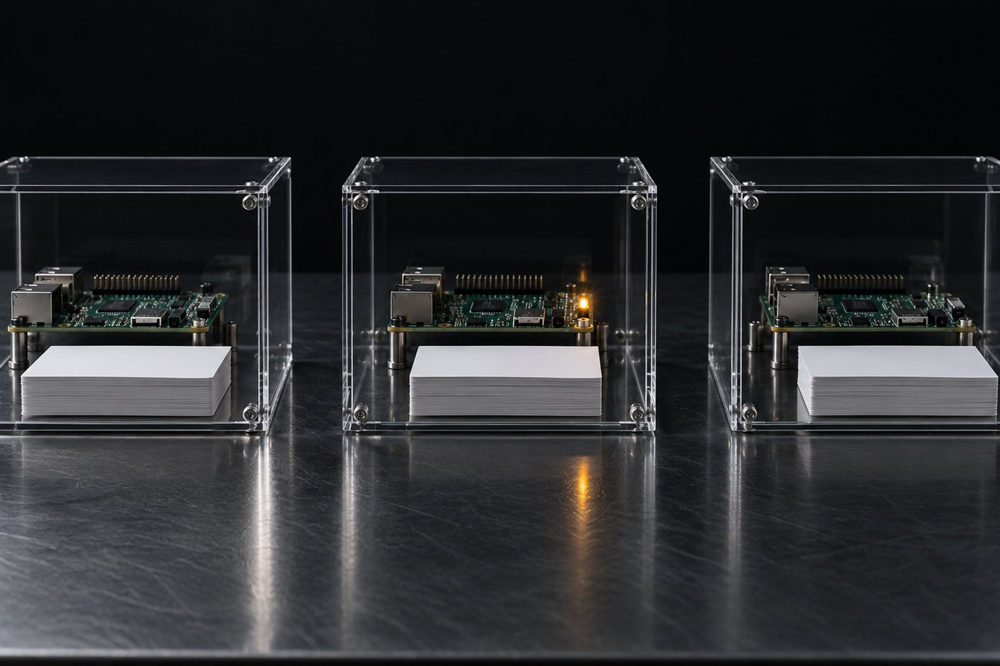

Formación LOOP-R Ingeniería · curso 3 de 6 · 8 clases
Multiagente y Orquestación: más agentes solo cuando el trabajo justifica el equipo
Cuándo no abrir el segundo agente, subagente que devuelve poco, fan-out con tope, generador y evaluador separados, worktree y sandbox por rol, cola que se retoma sin colisionar y el equipo Claude + Codex. Cada práctica tiene un ensayo sin gastar cuota y salida real de terminal.
- 8clases
- 18ejercicios con salida esperada
- 8ensayos sin gastar cuota
- 1video
Los 6 cursos de la formación
Este es el curso 3. Cada clase apunta al curso que es dueño del tema. Orden sugerido: 0 → 1 → 2 → 3 → 4 → 5.
- Curso 0Base: anatomía del loopLas cinco piezas, el harness, los motores de loop, el LOOP-R, criterio de terminado de 0 a 4 y topes.Abrir el curso
 Curso 1Verificación y evalsEvaluador separado y escéptico, tests congelados, reward hacking, conjunto de oro y juez calibrado.Abrir el curso
Curso 1Verificación y evalsEvaluador separado y escéptico, tests congelados, reward hacking, conjunto de oro y juez calibrado.Abrir el curso  Curso 2Ejecución largaEl kit de siete archivos, goal.md nivel 3+, contexto en franjas, handoff, loop headless y medición.Abrir el curso
Curso 2Ejecución largaEl kit de siete archivos, goal.md nivel 3+, contexto en franjas, handoff, loop headless y medición.Abrir el curso - Curso 3 · estás aquíMultiagente y orquestaciónCuándo no usarlo, subagentes, generador × evaluador, worktrees, colas y el equipo Claude + Codex.Abrir el curso
 Curso 4Seguridad del loop autónomoTríada letal, Regla de Dos, inyección por el contenido leído, hooks de guardia y sandbox.Abrir el curso
Curso 4Seguridad del loop autónomoTríada letal, Regla de Dos, inyección por el contenido leído, hooks de guardia y sandbox.Abrir el curso  Curso 5El loop que aprendeHipótesis con número, experimento, promoción y rollback, lecciones y el riesgo de optimizar contra el medidor.Abrir el curso
Curso 5El loop que aprendeHipótesis con número, experimento, promoción y rollback, lecciones y el riesgo de optimizar contra el medidor.Abrir el curso
Las clases
En el orden en que armas un equipo: decidir si lo necesitas, delegar, paralelizar, verificar, aislar, encolar, enrutar y diseñar el tuyo.
- Clase 1 · 15 minCuándo NO usar multiagenteCada agente adicional vuelve a leer el contexto, gasta su propia cuota y necesita ser coordinado. En la mayoría de las tareas de código, un solo agente, o subagentes que devuelven poco, rinde más. En esta clase decides antes de abrir el segundo agente, con una matriz de señales que corre como script.

Clase 2 · 18 minSubagentes: contexto limpio, retorno cortoUn subagente hace la parte ruidosa en una ventana de contexto propia y devuelve solo el resumen. Vale por lo que no vuelve: logs, búsquedas y archivos que la conversación principal nunca va a volver a leer. En esta clase escribes un subagente de solo lectura con retorno de hasta 12 líneas y verificas, de verdad, el tamaño de lo que volvió.
Clase 3 · 20 minOrquestador-trabajadores y fan-outFan-out es un orquestador soltando N trabajadores sobre ítems independientes y juntando solo lo que importa. Funciona cuando cada ítem cabe en un pedido claro, tiene tope y devuelve una línea verificable. En esta lección ejecutas un fan-out en shell con agente falso, ves cómo baja el tiempo y rehaces solo el ítem reprobado.
Clase 4 · 18 minGenerador × evaluadorEl multiagente más útil tiene dos roles: uno hace, otro revisa. El generador siempre dice "listo"; quien decide es un evaluador separado que mira solo el artefacto y devuelve un dictamen. En esta clase conectas los dos en un ciclo con tope de rondas, primero con un generador falso que miente y después con Claude de verdad.
Clase 5 · 20 minAislamiento: worktrees y sandboxesDos agentes en el mismo checkout no dan error: uno borra el trabajo del otro en silencio. Worktree le da a cada uno su propia copia y convierte la pérdida silenciosa en un conflicto visible a la hora del merge. Sandbox hace lo mismo con los permisos: el revisor lee, pero no escribe. En esta clase compruebas las dos cosas sin gastar cuota.- Clase 6 · 20 minColas, reanudación y colisión entre sesionesUna cola en carpetas sobrevive a una caída: lo que estaba corriendo vuelve a la entrada. Pero la misma reanudación que salva una copia atropella a la otra cuando dos corren en la misma carpeta. En esta clase interrumpes y reanudas una cola, provocas la colisión con números, bloqueas con flock y ves a la guardia de colisión preguntar antes de editar.
- Clase 7 · 20 minEquipo Claude + Codex: enrutamiento por rolDos modelos de casas distintas fallan en lugares distintos. Eso vale cuando cada uno tiene un rol: uno hace, el otro revisa solo leyendo, con el mismo briefing y el artefacto real. En esta clase enrutas roles por nivel, ensayas el puente hacia Codex sin gastar cuota y pones a Codex a revisar, de verdad, un script de este curso.
- Clase 8 · 20 minDiseña el equipo de tu loopUn equipo de agentes cabe en una página: la decisión de la clase 1 y, para cada rol, nivel, herramientas, qué escribe, aislamiento, entrada, retorno, quién verifica y tope. Escrito así, un script revisa si falta algún campo o si dos roles escriben en el mismo lugar sin aislamiento. En esta clase escribes el time.md de tu loop, lo revisas y lo ejecutas.
Para quién es
- 1Para quien ya usa Claude Code o Codex en la terminal y quiere dividir el trabajo entre agentes sin pagar el doble por gusto.
- 2Para quien ya vio a dos agentes escribir encima uno del otro, o una cola ejecutar la misma tarea dos veces.
- 3Para quien quiere que Claude haga y Codex revise, cada uno en el rol correcto.
Lo que sales haciendo
- 1Decidir entre un agente, secuencia, paralelo o híbrido con una matriz de señales.
- 2Escribir subagentes de solo lectura con retorno corto y ejecutar fan-out con tope por ítem.
- 3Separar generador y evaluador, darle worktree a quien escribe y sandbox a quien revisa.
- 4Retomar colas sin colisión y diseñar el time.md de tu loop, verificado por script.
Antes de empezar
- 1Linux o macOS con git, bash, Python 3 y Node 20+; Claude Code y Codex CLI entrando por tu suscripción.
- 2Los ensayos usan un agente falso y no gastan cuota. Las tres llamadas reales del curso son pequeñas.
- 3Recomendado: los cursos 0 (Base), 1 (Verificación) y 2 (Ejecución larga) de la formación.